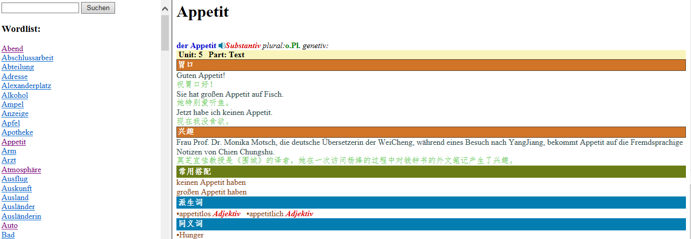
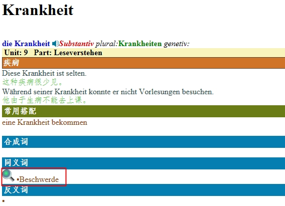

这是一篇技术总结，无排版。
自从听了刘导(中文系计算语言学)的建议，搞了好几天的nltk后，原来整理名词的进度再也没有拾回来，希望在未来这种状况能有所改观。
也许是我太笨了，用了nltk等方法，也找了一些Satz Korpus,发现并没有什么卵用，原书的课文都还没整理完...
于是转变思路，力攻前端，如下图所示,虽然现在还不确定最终交付是否以网页的方式，但考虑到其他软件对html也有解释能力，就基本放弃过去用Model+View编程的框架解释数据了。
关于名词整理的阶段性总结，参见"名词整理阶段总结.txt"
FirstEdition的一个例子，见11.xml;SecondEdition的一个例子，见11.xml;SecondEdition的一个例子，见238.xml，排版效果如下图所示:
做单词表时发现和词典差很多，词典的数据不太容易直接利用，单词表要实现下面的排版效果，这是照搬我们使用的彩色版课本的风格:

我们设想实现课文与单词表简单的交互效果，目前课文排版已经做好了两篇，但其对应的单词表的xml还没有写，上图的xml文件见Vokabeln6-1.xml, 课文对应部分的单词需要整理成这种形式，然后可以应用统一的js脚本写html进行排版，比如用html的title属性制作上图中的Zimmer的复数Zimmer。 虽然上图已经实现了用IE独有的ActiveX支持响应user点击TableCell实现读音的功能，但一方面在考虑自己剪辑的情况下准备读音文件可能和加字幕一样费时间(之前我用matlab写的程序剪课文还行，剪单词效果较差，即使正确率80%，手工改错的功夫用CoolEdit就剪完了),另一方面要考虑到IE之外的软件不支持ActiveX。
另完，我的另一位同学已经把常用动词的现在时和完成时变位用python的BeautifulSoup分析html整理成了xml文件，但他最近要study for Tofel, keine Zeit hat.
以上是我的技术总结，我们可以进一步We Chat交流。